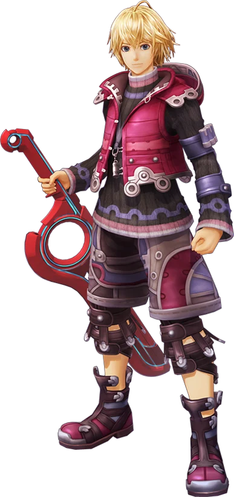
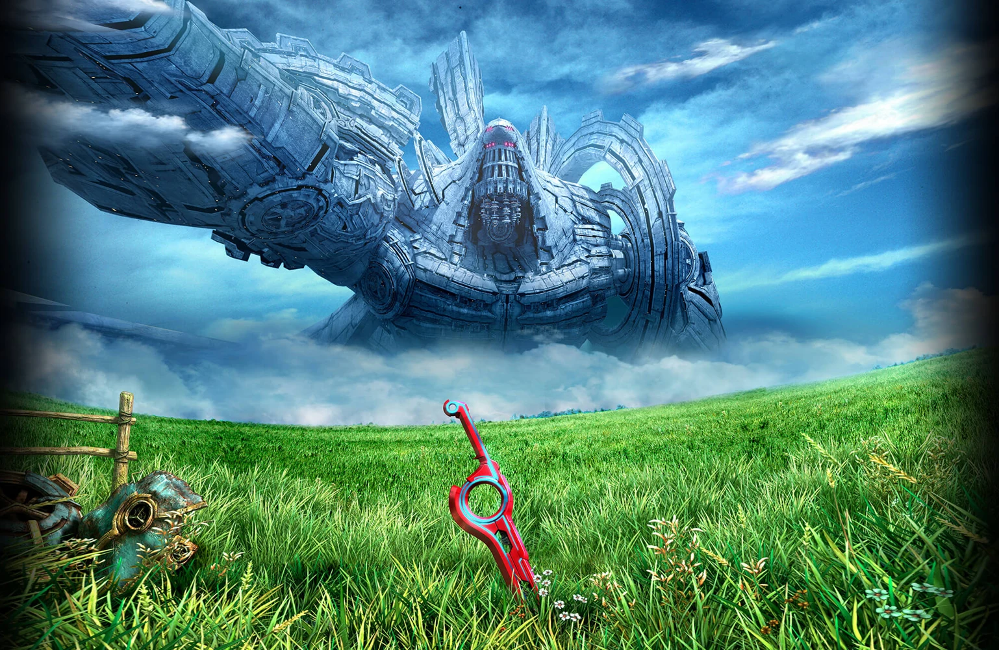
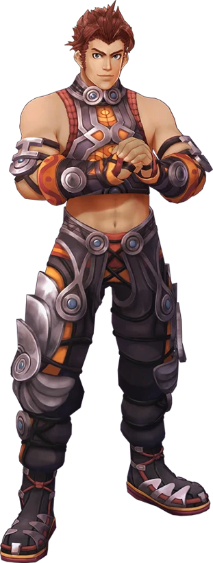

Shulk
The Monado’s wielder
A curious young researcher who studies the Monado. Its visions give him a chance to change what happens next.
Xenoblade Chronicles Game Guide

On the bodies of two ancient titans, a young inventor discovers a sword that can show him glimpses of the future.
The story begins in Colony 9, a settlement on the Bionis. When machines from the Mechonis attack, Shulk and his friends set out to learn why the fighting started and what the Monado can do.
Explore wide-open regions and fight in real time using Arts, positioning, and Shulk’s visions. The Switch remaster adds a cleaner interface and the Future Connected epilogue.

The Monado’s wielder
A curious young researcher who studies the Monado. Its visions give him a chance to change what happens next.

Colony 9 defender
Shulk’s childhood friend and a soldier in the Colony 9 Defence Force. He protects the party by drawing enemy attacks.